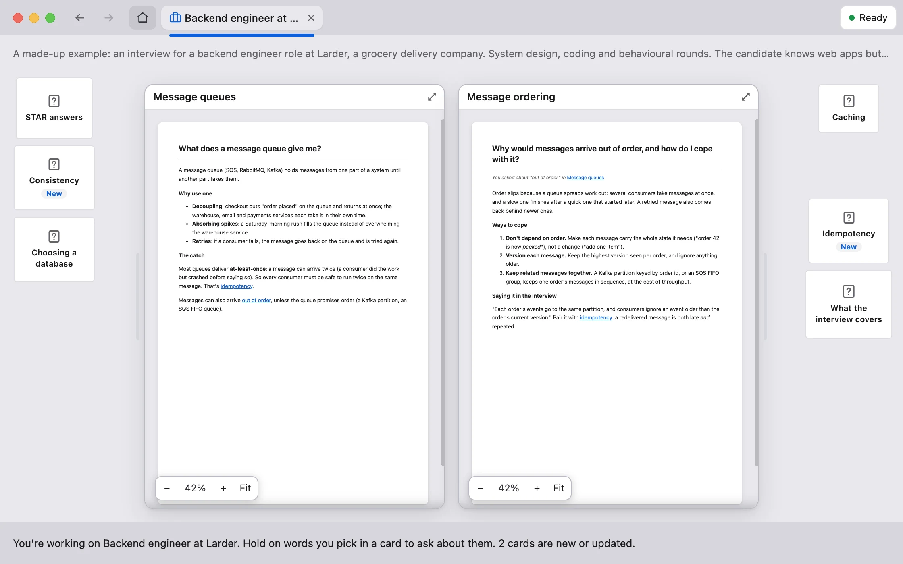

A topic is a board of cards
An interview, a technology, a subject: each is a board. Cards link to one another, and following a link brings its card into the middle. Drag cards anywhere; those at the sides shrink out of the way.
BetaUse with SmartDesktop or your own AI agent
Tell your AI what you’re preparing for, or what you want to learn, and it writes a board of short, linked cards, each answering one question. Pick any words in a card and ask about them: the answer comes back as a new card.
SmartPrep is in beta, so it may change significantly from one version to the next.

What it does
Your AI writes the cards; you read, arrange and ask. Every question you ask becomes part of the board.
An interview, a technology, a subject: each is a board. Cards link to one another, and following a link brings its card into the middle. Drag cards anywhere; those at the sides shrink out of the way.
The question comes first, then a short answer written for where you’re starting from, linking to the cards already there.
Double-click a word to pick it, again for its sentence, and again for more; Shift and a double-click adds another passage. Hold on what you’ve picked to ask about it. Your AI answers with a new card, and your words become a link to it.
There’s nothing to accept: cards go straight onto the board, and new or updated ones are marked until you’ve read them. Drag a card to the top to give it the middle, or to one side for two cards side by side.
Install
Two ways to work with your AI, and you can use both.
SmartDesktop is the chat for the family’s apps: your own Claude or ChatGPT, signed in with your own account, in one conversation across them. Three steps, and nothing to type in Terminal. More about SmartDesktop
Open the download and drag SmartPrep into your Applications folder.
SmartDesktop, the chat with your AI, is an app of its own, shared by the family’s apps. Drag it into Applications too.
Open SmartPrep, and choose Window › Show the Chat (⇧⌘C). Choose Claude or ChatGPT: if it isn’t set up yet, SmartDesktop installs it with its maker’s own installer and opens their sign-in page. SmartDesktop never sees your sign-in.
Claude Desktop, Claude Code and any AI agent that runs MCP servers can work in SmartPrep directly, without SmartDesktop. Connect yours below. After that, it opens SmartPrep by itself whenever it needs it.
SmartPrep adds itself.
If the status says Not running, another copy of SmartPrep is probably open: quit SmartPrep everywhere, then open it again. Or add it yourself: in Claude Desktop, open Settings → Developer → Edit Config, and add the entry from the Other AI apps tab.
Add it with one command.
claude mcp add --scope user smartprep -e ELECTRON_RUN_AS_NODE=1 -- /Applications/SmartPrep.app/Contents/MacOS/SmartPrep /Applications/SmartPrep.app/Contents/Resources/cli/mcp.jsOr, with Node.js, run npx @smartprep/cli setup, which sets up Claude Code and Claude Desktop for you.
Any AI app that runs MCP servers can use SmartPrep.
{
"mcpServers": {
"smartprep": {
"command": "/Applications/SmartPrep.app/Contents/MacOS/SmartPrep",
"args": [
"/Applications/SmartPrep.app/Contents/Resources/cli/mcp.js"
],
"env": {
"ELECTRON_RUN_AS_NODE": "1"
}
}
}
}SmartPrep runs its connection itself, so there’s nothing else to install.
No account, no trial, no paid plan: SmartPrep is released under the MIT licence. In beta, and still changing significantly.